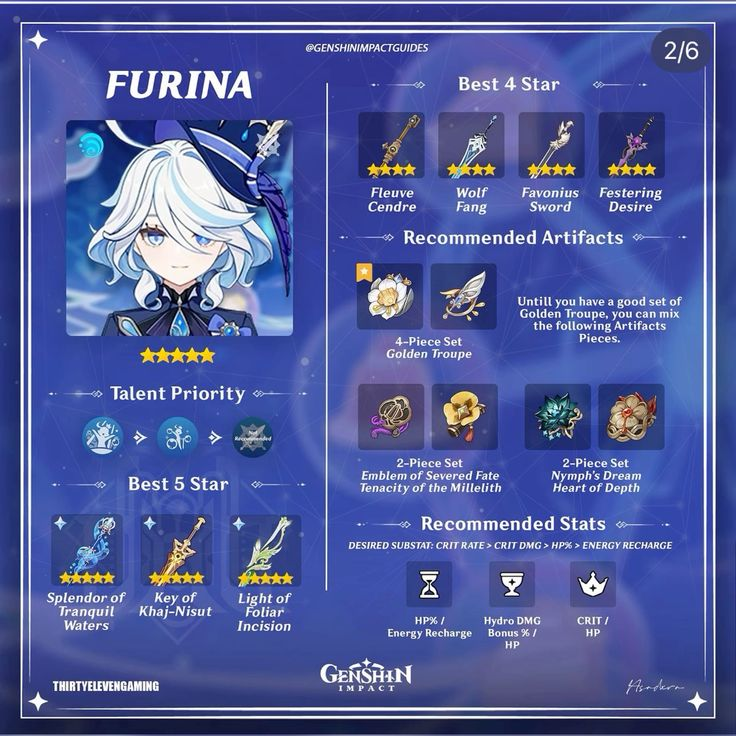

Furina

Furina de Fontaine is a playable Hydro character in Genshin Impact who can alternate between Pneuma and Ousia alignments.
Introduced as the flamboyant and overconfident Hydro Archon, Furina's theatrics are eventually revealed to be a public persona, which she later
discards in favor of living a relatively humbler life as an actress and artistic consultant.
